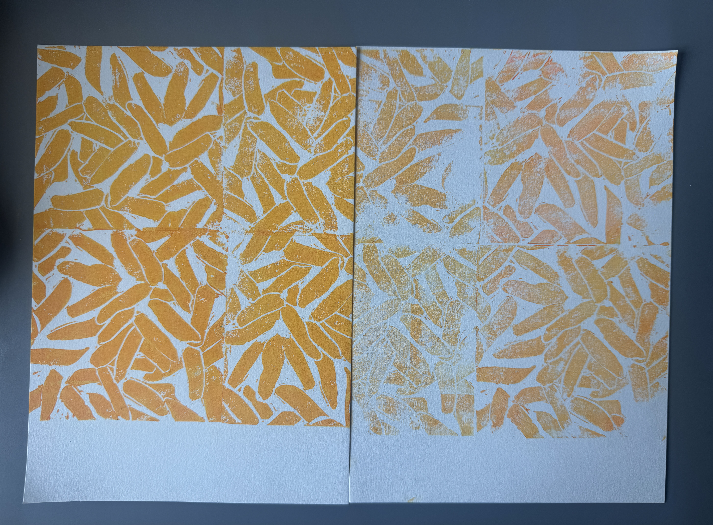
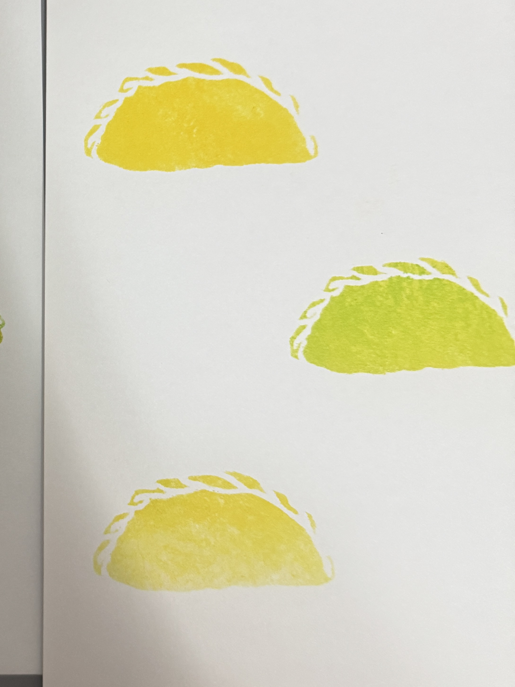
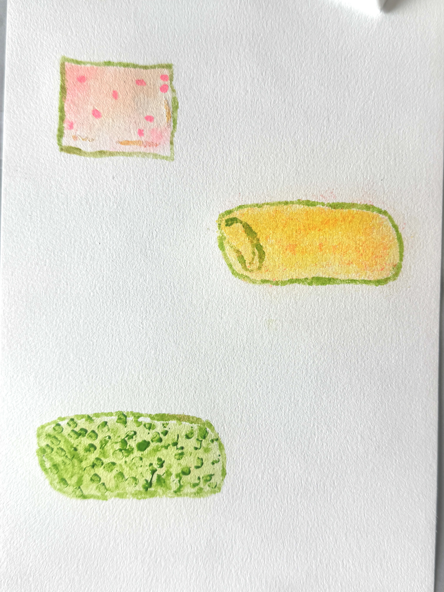
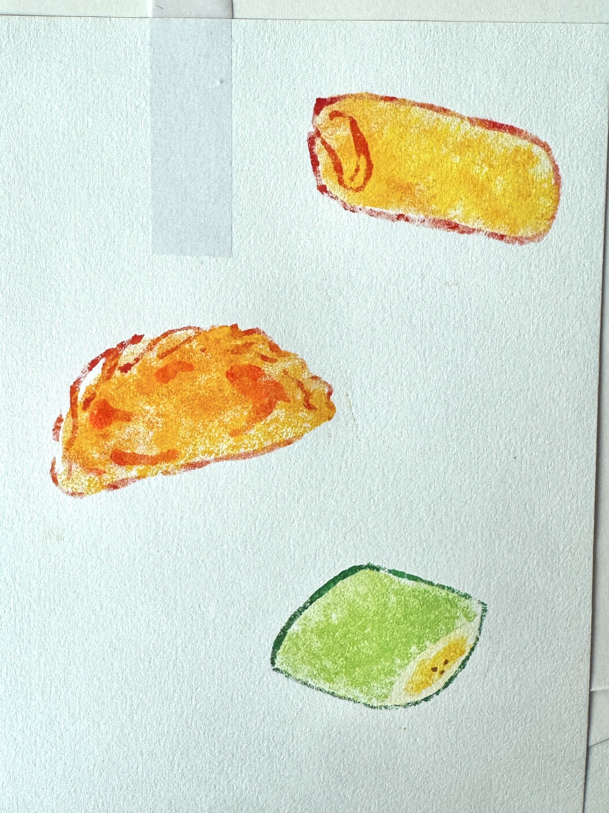
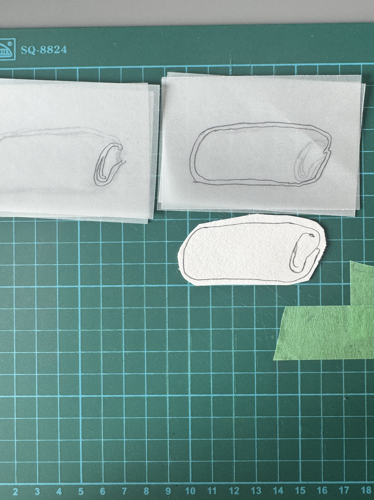
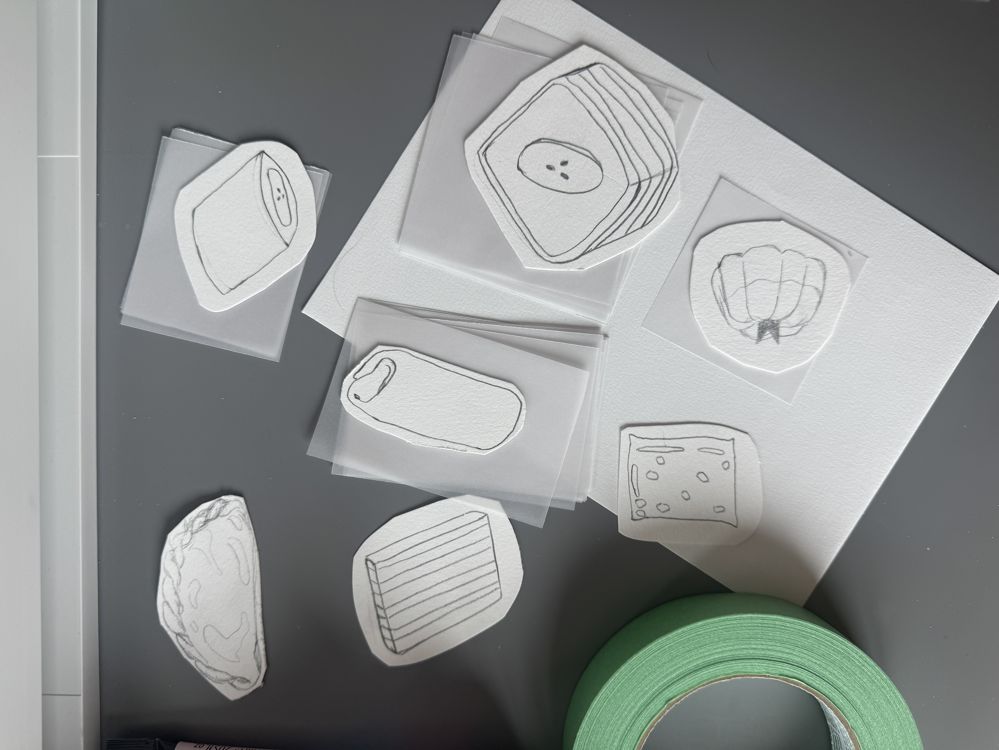

Explorations


This week, I started by doing more lino prints. For this lino, I wanted to experiment with showcasing the grains of rice. For the first attempt on the left, I wanted to showcase uncooked rice grains. When rice is uncooked, it tends to be denser and tougher, so I added some lines between the grains. But I think the overall outcome makes it look more like almonds than rice grains.
For the second lino print on the right, I wanted to just put together the grains of rice without any extra lines. The darker shade made the colors more prominent, and it does look like some grain from afar. However, when viewed closely, it looks like a microbe under a microscope. One issue I had was that it doesn’t really look like rice grain, but it did spark the idea of turning the linocut into a repeatable pattern I can use for the food textures.
After the lino prints, I decided I needed something else for the jajanan pasar snacks because linocuts were taking too long. I needed another method to move faster with the explorations; as I thought through what I could do, I came across stencils.


These are the processes I used to make the stencils. For my first attempt on the top, I started with one color, which is yellow, to test how it would look before adding in more colors, and it turned out to be really good. It was better than my linoprints attempt, and I felt I could explore more when making stencils.
I didn’t know how I wanted to add the color, so I decided to do the layering technique for my second attempt. I layered the lighter color first, which is yellow, and then added the darker shade, which is green. I used a sea sponge to help blend the colors, but it doesn’t blend everything; it also leaves some patches of color, which I think is good because I want texture in the food.




So I decided to make more stencils with different jajanan pasar foods. It's a slightly different style from my previous attempt because I added an outline for more detail. In my opinion, it did help to elevate the drawings more because without the outline, it just feels like something is missing, and it looks like some parts of the drawings are just floating. It also reminds me more of a curry puff than jajanan pasar.
Other than that, I also became more aware of how to use the sea sponge. For example, I played with the amount of paint used for the snack to create a gradient from dark to light, and I also made certain snacks feel more vibrant with the help of the dark outline. Overall, I’m still in the exploration stage with stencils this week, and I’m having fun creating them.
Reflection


During this week, I was more focused on finding the techniques that I can explore and be sure of. Since next week is project week, I'll have more time to explore and experiment with the stencils. For the lino prints, I wanted to put them on hold for now because they're taking a lot of time and effort. I wanted to do more explorations on the stencil, which will create more outcomes for me.
I also thought about whether stencils can help me generate more ideas and experimentation; I think I would like to keep doing it so I can come up with unexpected results. My plan for next week is to focus on more stencil work, but if I find another method I want to try, I believe I have time to give it at least a go.